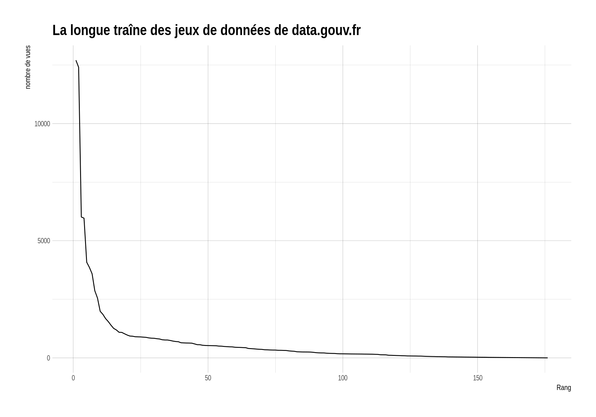
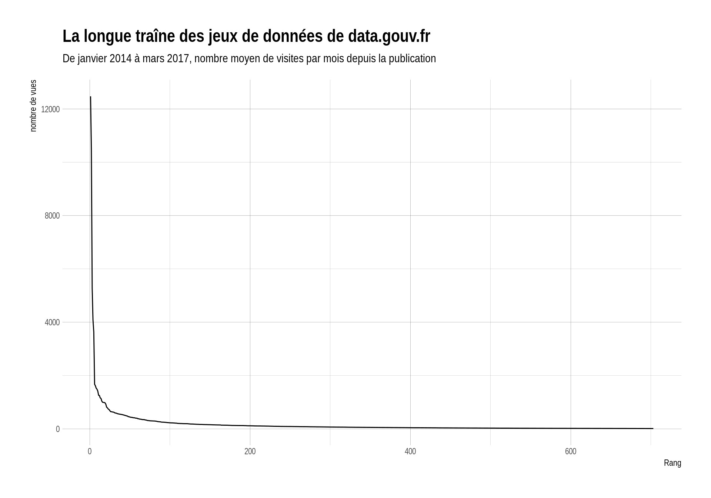
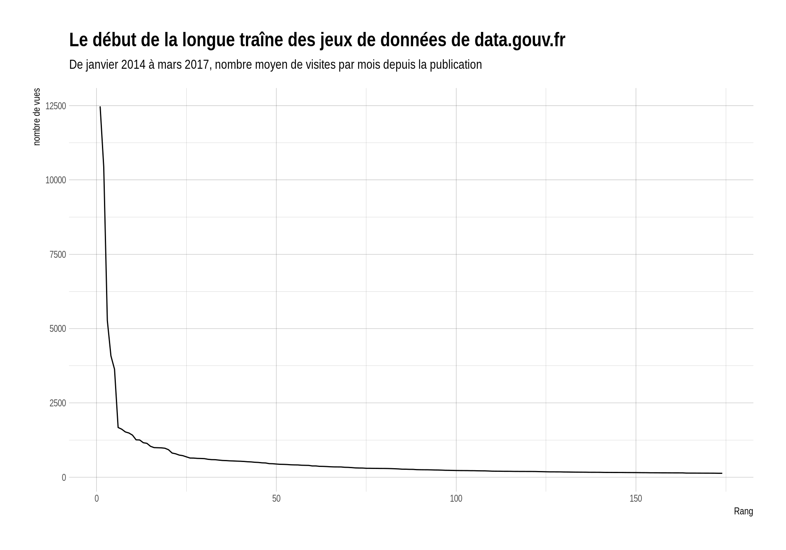

## Loading tidyverse: ggplot2
## Loading tidyverse: tibble
## Loading tidyverse: tidyr
## Loading tidyverse: readr
## Loading tidyverse: purrr
## Loading tidyverse: dplyr## Conflicts with tidy packages ----------------------------------------------## filter(): dplyr, stats
## lag(): dplyr, stats## Parsed with column specification:
## cols(
## date = col_character(),
## label = col_character(),
## nb_visits = col_integer(),
## entry_nb_visits = col_integer(),
## exit_nb_visits = col_integer()
## )
## Parsed with column specification:
## cols(
## year = col_integer(),
## month = col_character(),
## label = col_character(),
## nb_visits = col_integer(),
## entry_nb_visits = col_integer(),
## exit_nb_visits = col_integer()
## )## Warning: 1 parsing failure.
## row col expected actual file
## 1115205 entry_nb_visits no trailing characters e3 './data/data.gouv.fr/20140101_20170331_parmois_parurl.csv'
urls_mois %>%
filter(stringr::str_detect(label, "datasets")) %>%
filter(!stringr::str_detect(label, "Autres")) %>%
filter(nb_visits > 10) %>%
mutate(url = stringr::str_replace(label, "fr/datasets/", "")) %>%
mutate(url = stringr::str_replace(url, "/index", "")) %>%
group_by(url) %>%
summarise(nb_visits = round(mean(nb_visits, na.rm = TRUE), digits = 0)) %>%
mutate(rank = dense_rank(desc(nb_visits))) %>%
filter(rank < 500) %>%
arrange(desc(nb_visits)) %>%
DT::datatable()